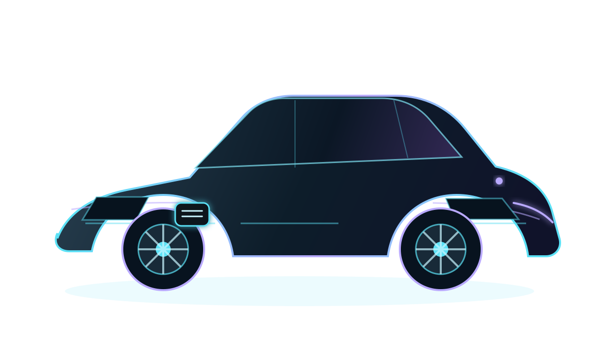

FULLSTACK / ЖЕКЕ ЖОБА / 2026
Көлік дерегін
түсінікті әрекетке
айналдырыңыз.
AutoCheck KZ — OBD-II кодын, қызмет көрсету тарихын және келесі қадамды бір түсінікті есепке жинайтын веб-платформа.

Диагностика дайын3 код · 1 есеп
OBD-II байланысBluetooth арқылы оқылды
01
Технология
адамға түсінікті болғанда
төмен қарай айналдырыңыз
01 / МӘСЕЛЕКөлік көп.
Көлік көп.
Түсінікті ақпарат аз.
Қазақстандағы автопарк өсіп келеді. Ал жүргізушінің қолындағы техникалық дерек әлі де код, чек және бөлшек жазбалары түрінде шашырап жатыр.
НЕГЕ ҚАЗІР?Жүргізушінің үш
Жүргізушінің үш
үнсіз мәселесі.
Қате коды түсініксіз
Сканер P0420 кодын көрсетеді. Бірақ «бұл нені білдіреді?» деген сұрақ ашық қалады.
Тарих әр жерде
Жөндеу жазбалары WhatsApp-та, чек қалтада, ал жүріс көрсеткіші тек есте сақталады.
СТО-ға дайындық әлсіз
Шеберге белгілерді қайта түсіндіру керек. Диагностика сапасы контексттің жоғалуынан зардап шегеді.
02 / ШЕШІМКодтан
Кодтан
түсінікті есепке.
AutoCheck KZ күрделі техникалық деректі адам әрекетіне айналдырады: түсіндірме, тарих және СТО-ға дайын сұрақтар.
autocheck.kz / garage⌁ secure
МЕНІҢ КӨЛІГІМ / 01
Toyota Corolla 2012
Жалпы жүріс168 400 км
Соңғы тексеру12.09 2026
Ашық кодтар03 назарда
Диагностика динамикасысоңғы 6 ай
СОҢҒЫ ДИАГНОСТИКА Есеп дайын
3 код · 2 түсіндірме · 1 ұсыныс
Кіріс
Көлікті тіркеу. Кодты қолмен енгізу немесе CSV жүктеу.
Өңдеу
Тексерілген ережелер мен қазақша түсіндірме қабаттасады.
Нәтиже
Қызмет тарихы бар қысқа есеп және СТО-ға нақты сұрақтар.
03 / ҚАЛАЙ ЖҰМЫС ІСТЕЙДІ?Разъёмнан
Разъёмнан
түсінікті есепке.
AutoCheck KZ көлік пен жүргізушінің арасындағы техникалық тілмаш сияқты жұмыс істейді: адаптер кодты оқиды, телефон деректі жібереді, платформа келесі қадамды көрсетеді.
OBD-II разъём
Адаптерді руль астындағы диагностикалық портқа қосыңыз. Қосылу 10 секундтан аспайды.
12V / OBD-II · Plug & playТелефонға байланыс
Bluetooth арқылы смартфонға қосылып, кодтар мен негізгі көрсеткіштерді қауіпсіз оқиды.
Bluetooth LE · Android / iOSAutoCheck KZ есебі
Кодтың мағынасын қазақша түсіндіріп, СТО маманына қоятын нақты сұрақтарды дайындайды.
Ruleset · service history · PDFКӨЛІКТЕOBD-IIадаптер
AutoCheckBluetooth connected03 кодТЕЛЕФОНДА
ПЛАТФОРМАДАТүсінікті есепСТО-ға дайын
LIVE DATA FLOWкод → түсіндірме → әрекет
04 / LIVE DEMOКодты енгізіңіз.
Кодты енгізіңіз.
Нәтижені көріңіз.
Бұл браузерлік demo — жобаның MVP сценарийін көрсетуге арналған. Дерек ойдан шығарылған, нақты техникалық диагноз болып саналмайды.
MOCK DIAGNOSTICS ENGINE
Қате кодын тексеру
OBD-II кодын енгізіп, AutoCheck KZ түсіндірмесін көріңіз.
Мәліметтер: оқу демонстрациясы · v0.1 ruleset
НӘТИЖЕP0420
БасымдықЖоспарлы тексеру
Катализатор жүйесінің тиімділігі төмен
Оттегі датчиктері катализатор тиімділігінің төмендегенін көрсетуі мүмкін. Бұл бірден қауіпті ақау деген сөз емес, бірақ эмиссия жүйесін тексеру қажет.
СТО-ға сұрақ«Датчиктер мен шығару жүйесін тексере аласыз ба?»
✓05 / АУДИТОРИЯАлғашқы пайдаланушы —
Алғашқы пайдаланушы —
өз көлігін күнде жүргізетін адам.
AD
PERSONA / ГИПОТЕЗААйдана, 27 жас
Алматы · product-аналитик · 2016 жылғы хэтчбек
«Маған кодтың аудармасы емес, келесі дұрыс қадам керек.»
Түсінікті тілТарихты сақтауУақыт үнемдеу
01
Қажеттілігі
Көліктің жағдайын түсіну және жөндеу алдында сенімді болу.
02
Қиындығы
Техникалық білім аз. Чектер мен жазбалар әр жерде.
03
Пилот
5 жүргізуші және 2 СТО шеберімен сұхбат.
06 / НАРЫҚБәсекелестер бар.
Бәсекелестер бар.
Контекст өзгеше.
AutoCheck KZ барлық функциямен жарыспайды. Оның бастапқы нүктесі — қазақша контент пен күнделікті сервис тарихы.
ӨнімКүшті жағыAutoCheck KZ позициясы
Kolesa.kz «История авто»Заңдық мәліметтер, иелер, оқиғалар тарихыКүнделікті диагностика және service log
Carly Smart MechanicСканер, live data, диагностикаҚолдағы код пен CSV есебін қазақша түсіндіру
OBDeleven DiagnosticsКодтар, баптау, кең OBD функционалыТар MVP, түсінікті есеп, СТО-ға дайындық
07 / SWOTМүмкіндік пен
Мүмкіндік пен
шектеуді бірге көру.
Қазақша түсіндірме
Диагностика мен тарих бір кабинетте.
Қолмен енгізілетін дерек
Бастапқы анықтамалық тек 30 кодпен шектеледі.
СТО-мен пилот
Қазақша техникалық контентке алғашқы ниша.
Қате түсіндірме
Сапаны маман тексеруі және дереккөз қажет.
08 / MVPАлғашқы нұсқа
Алғашқы нұсқа
нені істейді?
Толық платформа емес. Бір пайдаланушының бір көлігімен негізгі сценарийді соңына дейін өткізетін өнім өзегі.
Тіркелу және кіру
Жеке кабинет және деректерге жеке қолжетімділік.
Көлік профилі
Марка, модель, жыл және жүріс көрсеткіші.
Кодты енгізу
Қолмен енгізу немесе құрылымды CSV жүктеу.
Қазақша түсіндірме
30 кодқа тексерілген ереже және белгісіз кодты белгілеу.
Қызмет тарихы
Жұмыс, күн, жүріс және шығын жазбалары.
PDF есеп
Кодтар мен тарихты СТО-ға арналған қысқа есепке шығару.
БІРІНШІ НҰСҚАҒА КІРМЕЙДІ
Bluetooth OBD · AI-диагноз · төлем · СТО-ға онлайн жазылу
09 / АРХИТЕКТУРАClient → Server → Database
Client → Server → Database
әр қабат өз жұмысын істейді.
Модульдік монолит: жеке әзірлеуші үшін жылдам, түсінікті және кейін масштабтауға болатын бастапқы шешім.
01 / CLIENT
React + TypeScript
Формалар
Кабинет
PDF сценарийі
HTTPS / JSON
02 / SERVER
FastAPI
Auth
Ruleset
Report service
SQL / ORM
03 / DATA
PostgreSQL
FK / Index
Transaction
Backup
API / Негізгі endpoint-тер
POST/auth/registerТіркелуGET/vehiclesКөліктер тізіміPOST/vehicles/:id/diagnosticsКодтарды талдауGET/diagnostics/:id/report.pdfPDF есепACCESS CONTROL
Қолжетімділік бірінші орында.
HttpOnly cookie · құпиясөз хэші · user_id бойынша сүзгі · CSRF · rate limit
10 / ДЕРЕКТЕРБір көліктің
Бір көліктің
толық тарихы.
Кестелердің байланысы өнімнің ең маңызды логикасын көрсетеді: пайдаланушы → көлік → диагностика → қызмет.
usersid · name · email
1 : Nvehiclesid · user_id · mileage
1 : Ndiagnostic_runsid · vehicle_id · rule_version
dtc_codescode PK · description_kk · source_url1 : N run_codesrun_codesrun_id FK · code FK · explanation_snapshotқұрама PKservice_recordsvehicle_id FK · date · work · cost_kztN : 1 vehicles11 / СТЕКТехнологияны
Технологияны
себеппен таңдау.
12 / ЖОСПАРАлты апта.
Алты апта.
Бір жұмыс істейтін MVP.
Ұсынылған мерзім: 12 қазан — 22 қараша 2026. Жеке жұмыс, аптасына 12–15 сағат.
12–18.10
Зерттеу және дизайн
5 сұхбат · user flow · Figma
19–25.10
Backend негізі
Auth · кестелер · миграциялар
26.10–01.11
Ережелер және API
30 код · CSV · API тесттері
02–08.11
Frontend біріктіру
Кабинет · тарих · PDF сценарийі
09–15.11
Тестілеу және пилот
5 қолданушы · рұқсат · E2E
16–22.11
Іске қосу және қорғау
Deploy · backup · demo · түзету
13 / КЕЛЕСІ ҚАДАМИдеяны
Идеяны
пилотпен тексеру.
Мақсат: 5 адамның кемінде 4-еуі кодты енгізіп, PDF есепті көмексіз ала алуы.
Жобаны талқылау ↗01Қате түсіндірме
Маман тексеруі және белгісіз кодқа ашық жауап.
02Деректердің ашылуы
Иесін тексеру, қолжетімділік тесті, backup.
03Уақыттың жетпеуі
30 кодпен шектеу және тар MVP шекарасы.